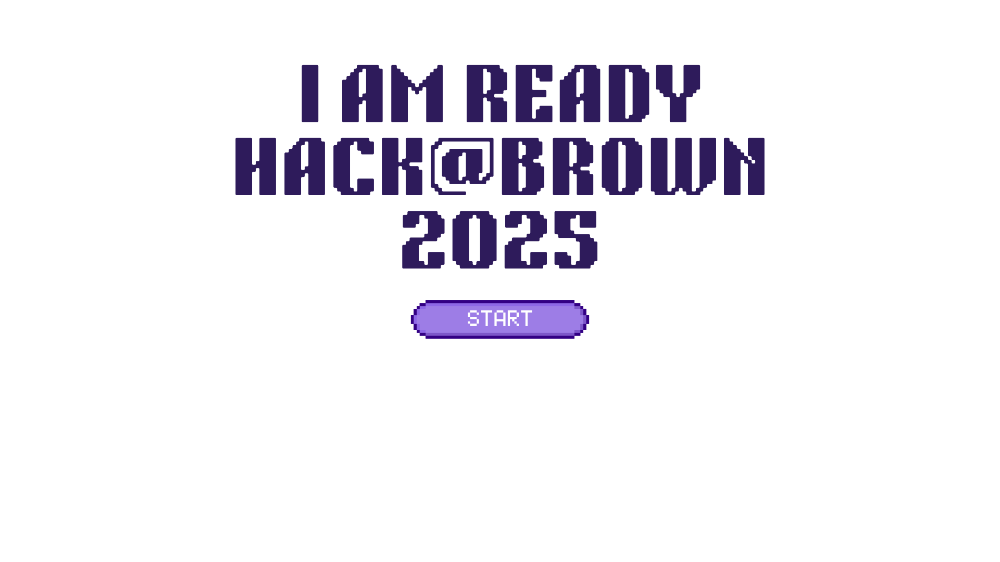

Hi, I’m Oleksandra, a passionate developer and creative thinker. As a Computational Finance major and coding enthusiast, I’ve built projects ranging from interactive games to finance tools for financial modeling. Outside of coding, I focus on animal welfare, conducting research and data analysis for organizations like Faunalytics and research groups such as the IRG. These experiences have shaped my problem-solving skills and fueled my passion for making an impact through technology.
While largely self-taught in coding, I’ve pursued my passion rigorously by enrolling in data science classes during my study abroad at the London School of Economics. To push myself further, I’m currently completing the 100 Days of Code challenge and earning a certificate from LSE, constantly improving my skills. Hack@Brown would be a great opportunity to apply what I’ve learned, enhance my abilities, and collaborate with others to create something impactful.
I thrive in collaborative environments where I can contribute to a shared vision. When the war in Ukraine escalated, my friends and I co-founded a humanitarian aid initiative to address the urgent needs for internally displaced people. Together, we coordinated efforts to deliver food and supplies to over 1 million Ukrainians. This experience taught me the value of teamwork under pressure and the importance of listening, adapting, and supporting each other to achieve impactful results. I bring this same spirit of collaboration and dedication to every team I work with.
I believe problems can’t be solved with the same mindset that created them. This inspired me to start a chapter of Allied Scholars of Animal Protection (ASAP) at LSE, creating a platform for students passionate about animal welfare. Similarly, as VP of Professional Development at Scholars of Finance, I wrote 100 handwritten letters to executives and CEOs, which led to moderating a session with the CEO of Bank of America in front of 300 attendees, creating an impactful and memorable event. This mindset will help me tackle challenges creatively, collaborate effectively, and execute ideas with determination at Hack@Brown.
I am an author at Faunalytics, a nonprofit organization that provides research and data to support those interested in animal advocacy. I also recently completed an eight-week research program with the Impact Research Group, further expanding my skills. I’m constantly looking for opportunities to learn and grow, and I see this hackathon as a perfect chance to enhance my knowledge while contributing to meaningful projects.
